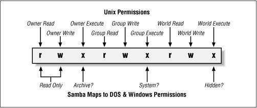

Using Samba
Robert Eckstein, David Collier-Brown, Peter Kelly1st Edition November 1999
1-56592-449-5, Order Number: 4495
416 pages, $34.95
|
|
|
|
|
Using SambaRobert Eckstein, David Collier-Brown, Peter Kelly1st Edition November 1999 1-56592-449-5, Order Number: 4495 416 pages, $34.95 |
5.3 File Permissions and Attributes on MS-DOS and Unix
DOS was never intended to be a multiuser, networked operating system. Unix, on the other hand, was designed that way from the start. Consequently, there are inconsistencies and gaps in coverage between the two filesystems that Samba must not only be aware of, but also provide solutions for. One of the biggest gaps is how Unix and DOS handle permissions with files.
Let's take a look at how Unix assigns permissions. All Unix files have read, write, and execute bits for three classifications of users: owner, group, and world. These permissions can be seen at the extreme left-hand side when a
ls-alcommand is issued in a Unix directory. For example:-rwxr--r-- 1 tom users 2014 Apr 13 14:11 access.confWindows, on the other hand, has four principal bits that it uses with any file: read-only, system, hidden, and archive. You can view these bits by right-clicking on the file and choosing the Properties menu item. You should see a dialog similar to Figure 5.6.[ 1]
[1] The system checkbox will probably be greyed for your file. Don't worry about that - you should still be able to see when the box is checked and when it isn't.
Figure 5.6: DOS and Windows file properties
The definition of each of those bits follows:
- Read-only
The file's contents can be read by a user but cannot be written to.
- System
This file has a specific purpose required by the operating system.
- Hidden
This file has been marked to be invisible to the user, unless the operating systems is explicitly set to show it.
- Archive
This file has been touched since the last DOS backup was performed on it.
Note that there is no bit to specify that a file is executable. DOS and Windows NT filesystems identify executable files by giving them the extensions .EXE, .COM, .CMD, or .BAT.
Consequently, there is no use for any of the three Unix executable bits that are present on a file in a Samba disk share. DOS files, however, have their own attributes that need to be preserved when they are stored in a Unix environment: the archive, system, and hidden bits. Samba can preserve these bits by reusing the executable permission bits of the file on the Unix side - if it is instructed to do so. Mapping these bits, however, has an unfortunate side-effect: if a Windows user stores a file in a Samba share, and you view it on Unix with the
ls-alcommand, some of the executable bits won't mean what you'd expect them to.Three Samba options decide whether the bits are mapped:
maparchive,mapsystem, andmaphidden. These options map the archive, system, and hidden attributes to the owner, group, and world execute bits of the file, respectively. You can add these options to the[data]share, setting each of their values as follows:[data] path = /home/samba/data browseable = yes guest ok = yes writeable = yes map archive = yes map system = yes map hidden = yesAfter that, try creating a file in the share under Unix - such as
hello.java- and change the permissions of the file to 755. With these Samba options set, you should be able to check the permissions on the Windows side and see that each of the three values has been checked in the Properties dialog box. What about the read-only attribute? By default, Samba 2.0 sets this whenever a file does not have the Unix owner write permission bit set. In other words, you can set this bit by changing the permissions of the file to 555.We should warn you that the default value of the
maparchiveoption isyes, while the other two options have a default value ofno. This is because many programs do not work properly if the archive bit is not stored correctly for DOS and Windows files. The system and hidden attributes, however, are not critical for a program's operation and are left to the discretion of the administrator.Figure 5.7 summarizes the Unix permission bits and illustrates how Samba maps those bits to DOS attributes. Note that the group read/write and world read/write bits do not directly translate to a DOS attribute, but they still retain their original Unix definitions on the Samba server.
Figure 5.7: How Samba and Unix view the permissions of a file
5.3.1 Creation masks
Samba has several options to help with file creation masks. File creation masks (or umasks) help to define the permissions a file or directory will receive at the time it is created. In Unix, this means that you can control what permissions a file or directory does not have when it is created. For files accessed from Windows, this means you can disable the read-only, archive, system, and hidden attributes of a file as well.
For example, the
createmaskoption will force the permissions of a file created by a Windows client to be at most 744:[data] path = /home/samba/data browseable = yes guest ok = yes writeable = yes create mask = 744while the
directorymaskoption shown here will force the permissions of a newly created directory to be at most 755:[data] path = /home/samba/data browseable = yes guest ok = yes writeable = yes directory mask = 755Alternatively, you can also force various bits with the
forcecreatemodeandforcedirectorymodeoptions. These options will perform a logical OR against the file and directory creation masks, ensuring that those bits that are specified will always be set. You would typically set these options globally in order to ensure that group and world read/write permissions have been set appropriately for new files or directories in each share.In the same spirit, if you wish to explicitly set the Unix user and group attributes of a file that is created on the Windows side, you can use the
forceuserandforcegroupoptions. For example:[data] path = /home/samba/data browseable = yes guest ok = yes writeable = yes create mask = 744 directory mask = 755 force user = joe force group = accountingThese options actually assign a static Unix user and group to each connection that is made to a share. However, this occurs after the client authenticates; it does not allow free access to a share. These options are frequently used for their side effects of assigning a specific user and group to each new file or directory that is created in a share. Use these options with discretion.
Finally, one of the capabilities of Unix that DOS lacks is the ability to delete a read-only file from a writable directory. In Unix, if a directory is writable, a read-only file in that directory can still be removed. This could permit you to delete files in any of your directories, even if the file was left by someone else.
DOS filesystems are not designed for multiple users, and so its designers decided that read-only means "protected against accidental change, including deletion," rather than "protected against some other user on a single-user machine." So the designers of DOS prohibited removal of a read-only file. Even today, Windows file systems exhibit the same behavior.
Normally, this is harmless. Windows programs don't try to remove read-only files because they know it's a bad idea. However, a number of source-code control programs - which were first written for Unix - run on Windows and require the ability to delete read-only files. Samba permits this behavior with the
deletereadonlyoption. In order to enable this functionality, set the option toyes:[data] path = /home/samba/data browseable = yes guest ok = yes writeable = yes create mask = 744 directory mask = 755 force user = joe force group = accounting delete readonly = yes5.3.2 File and Directory Permission Options
The options for file and directory permissions are summarized in Table 5.5; each option is then described in detail.
Table 5.5: File and Directory Permission Options Option
Parameters
Function
Default
Scope
map archiveboolean
Preserve DOS archive attribute in user execute bit (0100).
yesShare
map systemboolean
Preserve DOS system attribute in group execute bit (0010).
noShare
map hiddenboolean
Preserve DOS hidden attribute in world execute bit (0001).
noShare
create mask (create mode)numeric
Sets the maximum permissions for files created by Samba.
0744Share
directory mask (directory mode)numeric
Sets the maximum permissions for directories created by Samba.
0755Share
force create modenumeric
Forces the specified permissions (bitwise or) for directories created by Samba.
0000Share
force directory modenumeric
Forces the specified permissions (bitwise or) for directories created by Samba.
0000Share
force group (group)string ( group name)
Sets the effective group for a user accessing this share.
None
Share
force userstring (username)
Sets the effective username for a user accessing this share.
None
Share
delete readonlyboolean
Allows a user to delete a read-only file from a writable directory.
noShare
5.3.2.1 create mask
The argument for this option is an octal number indicating which permission flags may be set at file creation by a client in a share. The default is 0755, which means the Unix owner can at most read, write, and optionally execute his or her own files, while members of the user's group and others can only read or execute them. If you need to change it for non-executable files, we recommend 0644, or
rw-r--r--. Keep in mind that the execute bits may be used by the server to map certain DOS file attributes, as described earlier. If you're altering the create mask, those bits have to be part of the create mask as well.5.3.2.2 directory mask
The argument for this option is an octal number indicating which permission flags may be set at directory creation by a client in a share. The default is 0755, which allows everyone on the Unix side to at most read and traverse the directories, but allows only you to modify them. We recommend the mask 0750, removing access by world users.
5.3.2.3 force create mode
This option sets the permission bits that Samba will force to be set when a file permission change is made. It's often used to force group permissions, mentioned previously. It can also be used to preset any of the DOS attributes we mentioned: archive (0100), system (0010), or hidden (0001). This option always takes effect after the
maparchive,mapsystem,maphidden, andcreatemaskoptions.Many Windows applications rename their data files to datafile.bak and create new ones, thus changing their ownership and permissions so that members of the same Unix group can't edit them. Setting
force create mask = 0660will keep the new file editable by members of the group.5.3.2.4 force directory mode
This option sets the permission bits which Samba will force when a directory permission change is made or a directory is created. It's often used to force group permissions, as mentioned previously. This option defaults to 0000, and can be used just like the
forcecreatemodeto add group or other permissions if needed. This option always takes effect after themaparchive,mapsystem,maphidden, anddirectorymaskoptions.5.3.2.5 force group
This option, sometimes called
group, assigns a static group ID that will be used on all connections to a service after the client has successfully authenticated. This assigns a specific group to each new file or directory created from an SMB client.5.3.2.6 force user
The
forceuseroption assigns a static user ID that will be used on all connections to a service after the client has successfully authenticated. This assigns a specific user to each new file or directory created from an SMB client.5.3.2.7 delete readonly
This option allows a user to delete a directory containing a read-only file. By default, DOS and Windows will not allow such an operation. You probably will want to leave this option turned off unless a program needs this capability; many Windows users would be appalled to find that they'd accidentally deleted a file which they had set read-only. In fact, even the Unix
rmcommand will ask users if they really want to override the protection and delete read-only files. It's a good idea to have Samba be at least as cautious.5.3.2.8 map archive
The DOS archive bit is used to flag a file that has been changed since it was last archived (e.g., backed up with the DOS archive program.) Setting the Samba option
maparchive=yescauses the DOS archive flag to be mapped to the Unix execute-by-owner (0100) bit. It's best to leave this option on if your Windows users are doing their own backups, or are using programs that require the archive bit. Unix lacks the notion of an archive bit entirely. Backup programs typically keep a file that lists what files were backed up on what date, so comparing file modification dates serves the same purpose.Setting this option to
yescauses an occasional surprise on Unix when a user notices that a data file is marked as executable, but rarely causes harm. If a user tries to run it, he or she will normally get a string of error messages as the shell tries to execute the first few lines as commands. The reverse is also possible; an executable Unix program looks like it hasn't been backed up recently on Windows. But again, this is rare, and is usually harmless.5.3.2.9 map system
The DOS system attribute is used to indicate files that are required by the operating system, and should not be deleted, renamed, or moved without special effort. Set this option only if you need to store Windows system files on the Unix file server. Executable Unix programs will appear to be non-removable special Windows files when viewed from Windows clients. This may prove mildly inconvenient if you want to move or remove one. For most sites, however, this is fairly harmless.
5.3.2.10 map hidden
DOS uses the hidden attribute to indicate that a file should not ordinarily be visible in directory listings. Unix doesn't have such a facility; it's up to individual programs (notably the shell) to decide what to display and what not to display. Normally, you won't have any DOS files that need to be hidden, so the best thing to do is to leave this option turned off.
Setting this option to
yescauses the server to map the hidden flag onto the executable-by-others bit (0001). This feature can produce a rather startling effect. Any Unix program that is executable by world seems to vanish when you look for it from a Windows client. If this option is not set, however, and a Windows user attempts to mark a file hidden on a Samba share, it will not work - Samba has no place to store the hidden attribute!
 |
 |
 |
| 5.2 Filesystem Differences |
 | 5.4 Name Mangling and Case |
Back to: Using Samba
© 1999, O'Reilly & Associates, Inc.